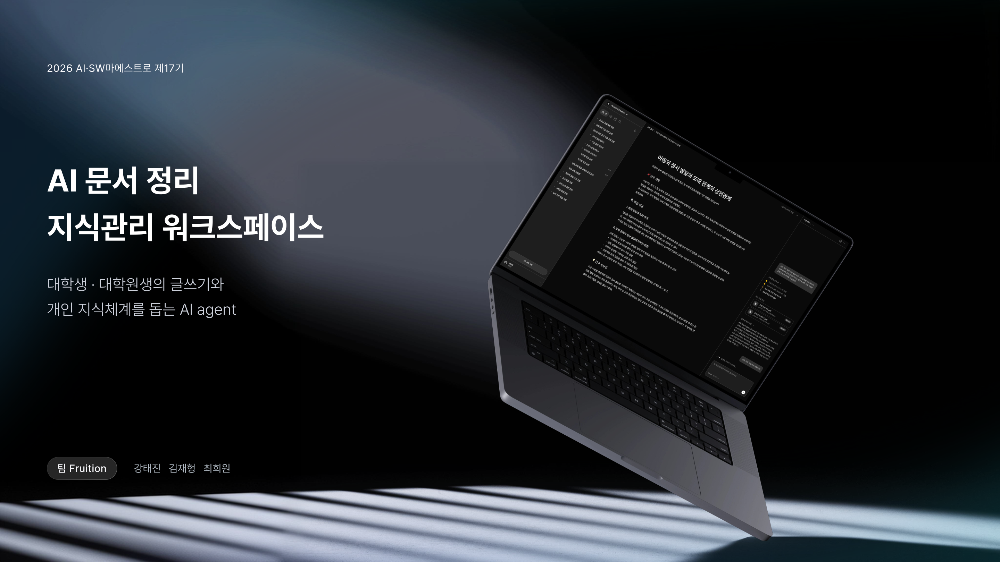
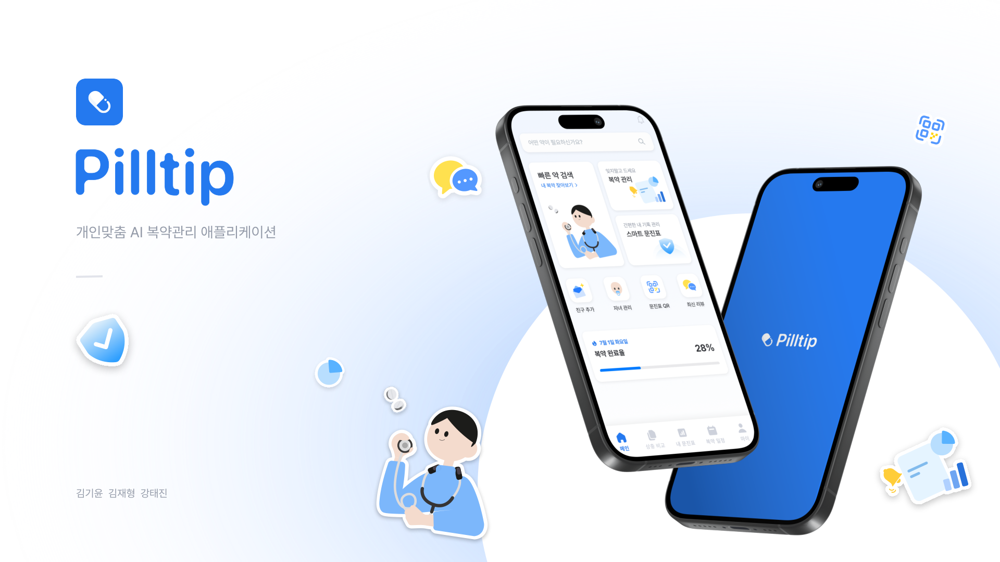

Fruition
올린 문서를 LLM이 Wiki로 정리하고, RAG로 원문 근거를 찾아 답하거나 자연어로 문서를 편집하는 AI 워크스페이스입니다. AWS EKS에 배포했으며 알파 테스트를 진행하고, 피드백을 받아 개선 중에 있습니다. 프로그램 저작물 등록을 마쳤고, 임시명세서로 특허를 출원했습니다.

기여와 성과 보기AI ENGINEER / BACKEND ENGINEER
AI를 최대한 활용해 사람들을 이롭게 하는
서비스를 개발하고자 합니다.
AI가 못하는 게 있을까?
ABOUT ME
문제를 작게 재정의하여 단계적 해결에 몰입하는 것을 좋아합니다.
LLM Wiki 기반 AI 지식 관리 워크스페이스 팀 프로젝트 Fruition에서 AI 파트를 리드하고 있습니다. AI가 틀린 근거로 답하거나 사용자 문서를 함부로 바꾸지 않도록 평가, 승인, 복구 구조를 설계해 왔습니다. 직접 작성하고 팀원과 검수한 평가셋에서 RAG 정답률을 71.7%에서 93.0%로, AI 문서 편집 성공률을 85.6%에서 88.9%로 높였습니다.
현재 알파 테스트 중인 LLM Wiki 기반 AI 지식 관리 워크스페이스 Fruition에서 AI 파트를 리드하고 있습니다. 직접 작성하고 팀원과 검수한 평가셋에서 RAG 정답률 71.7% → 93.0%, AI 문서 편집 성공률 85.6% → 88.9%를 확인했습니다. 복약 위험 정보를 쉽게 전달하는 Pilltip에서는 백엔드와 AI를 맡았습니다. 모니터 밖에서는 약 3년째 웨이트 트레이닝을 꾸준히 이어가고 있습니다.
PROJECTS
올린 문서를 LLM이 Wiki로 정리하고, RAG로 원문 근거를 찾아 답하거나 자연어로 문서를 편집하는 AI 워크스페이스입니다. AWS EKS에 배포했으며 알파 테스트를 진행하고, 피드백을 받아 개선 중에 있습니다. 프로그램 저작물 등록을 마쳤고, 임시명세서로 특허를 출원했습니다.

기여와 성과 보기의약품 정보를 쉬운 말로 친절히 안내하고, 사용자와 가족의 복약 위험 정보와 일정 관리를 돕는 개인 맞춤 AI 안심 복약 서비스입니다.

기여와 성과 보기HWP/HWPX 뷰어 오픈소스 Rhwp Contributor 등재2026.06
Claude Code로 개선점 분석부터 계획, 코드 수정, Commit, Push, PR까지 모두 자동화하여 진행. PR 7건 반영
AI 모델 단가와 폐기 일정 주간 점검 자동화2026.10
매주 모델 단가와 공급사 폐기 일정을 점검해 차이를 GitHub 이슈로 알리는 GitHub Actions 구성
부산대학교 IT 개발 동아리 APPTIVE2025.03 - 2026.01
백엔드 멘티로 Spring을 통한 백엔드 구현 및 AWS EC2에 배포 경험 이후, 멘토로 활동하여 백엔드 기초 지식 위주로 커리큘럼 개선 및 멘토링 자료 제작, 코드리뷰 진행
정보의생명공학대학 정보컴퓨터공학부 (공학사) 부산대학교2026.02
평균 학점 4.12 / 4.5 (편입)
정보처리기사 한국산업인력공단2025.09
캡스톤디자인 금상, 부산대학교 정보의생명공학대학 (2025.10)
부산 DATA WEEK 최우수상, 부산테크노파크 (2025.09)
AI LAUNCH 커리어스쿨 창업톤 장려상, KRYPTON X x Root Impact x Google.org (2025.09)
SW중심대학 디지털 경진대회 후원기업상, SW중심대학협의회 (2025.08)